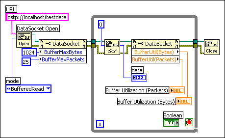

Complete the following steps to enable client-side buffering using DataSocket functions. You must complete these steps for each client connection you establish.
You also can enable buffering when sharing data using the DataSocket functions by adding the string ?maxbytes=1000&maxpackets=10, to the end of the URL, where 1000 is the maximum number of bytes the buffer contains and 10 is the maximum number of packets the buffer contains.
|
Note Buffering applies only when you use the DataSocket Read function to read data a server writes. Buffering is not available when you use front panel DataSocket data binding to read data a server writes. Buffering is available for front panel data binding through the Shared Variable Engine if you bind controls to shared variables with buffering enabled on the Network page of the Shared Variable Properties dialog box. |
The following example uses buffering with DataSocket functions.
